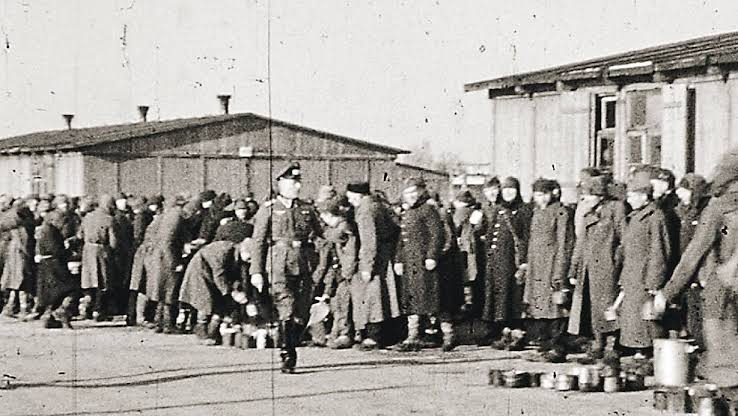

„Unternehmen Barbarossa“
Mit dem deutschen Angriff begann ein rassistisch geführter Vernichtungskrieg. Die Wehrmacht war hauptverantwortlich für die Kriegsgefangenen.

Schloß Holte-Stukenbrock
Erinnerung vor der eigenen Haustür
Wie erinnert Schloß Holte-Stukenbrock heute an einen der großen Orte des Leidens sowjetischer Kriegsgefangener im Nationalsozialismus?
Der Ort
Das Stalag 326 wurde 1941 als Rekrutierungs- und Durchgangslager für den Wehrkreis VI eingerichtet. Am 10. Juli 1941 trafen die ersten sowjetischen Kriegsgefangenen ein. Von hier aus wurden sie registriert und vor allem zur Zwangsarbeit in Nordrhein-Westfalen weiterverteilt.

Historische Einordnung
Das Stalag 326 war nicht nur ein Lager in der Region, sondern Teil des nationalsozialistischen Kriegs- und Zwangsarbeitssystems. Etwa jeder dritte sowjetische Kriegsgefangene, der zwischen 1941 und 1945 in das Deutsche Reich kam, durchlief das Stalagsystem 326.
Mit dem deutschen Angriff begann ein rassistisch geführter Vernichtungskrieg. Die Wehrmacht war hauptverantwortlich für die Kriegsgefangenen.
Das Lager organisierte Registrierung und Weiterverteilung in Arbeitskommandos im Ruhrgebiet und in weiteren Regionen des Wehrkreises VI.
Von etwa 5,3 bis 5,7 Millionen sowjetischen Kriegsgefangenen überlebten 2,3 bis 3 Millionen die deutsche Gefangenschaft nicht.
Sowjetische Kriegsgefangene arbeiteten in produzierenden Betrieben, bei der Rohstoffgewinnung, in der Landwirtschaft und besonders im Ruhrgebiet. Der sogenannte „Russeneinsatz“ berührte nahezu alle Bereiche des wirtschaftlichen und gesellschaftlichen Lebens.
Mangelernährung, unzureichende medizinische Versorgung, schlechte hygienische Verhältnisse und die massive Ausbeutung der Arbeitskraft prägten den Alltag. Viele Gefangene starben an Unterernährung, Krankheiten und den Folgen der Arbeitseinsätze.
Neben sowjetischen Kriegsgefangenen waren in bestimmten Lagerbereichen auch französische, polnische, serbische, italienische und belgische Kriegsgefangene untergebracht.
Die amerikanische Armee befreit das Stalag 326.
Die britische Militärregierung nutzt das Gelände als Civil Internment Camp No. 7 für etwa 8.500 Internierte.
Das Sozialwerk Stukenbrock bringt auf dem Gelände Flüchtlinge, Vertriebene und weitere hilfsbedürftige Menschen unter.
Das Areal wird durch das LAFP-Bildungszentrum Erich Klausener genutzt.
Bundespräsident Joachim Gauck besucht zum 70. Jahrestag des Kriegsendes die Gedenkfeier am Stalag 326.
Das Stalag 326 kann als Beispiel dafür verstanden werden, dass NS-Geschichte nicht nur an bekannten nationalen Orten erinnert wird. Die Gedenkstätte zeigt, wie Gewaltgeschichte direkt in einer lokalen Landschaft eingeschrieben ist und wie Erinnerung vor Ort gestaltet werden muss.
Quellenhinweis: Gedenkstätte Stalag 326, LWL/Westfälische Geschichte, WDR ZeitZeichen und Überblicksdarstellungen zum Stammlager VI K (326).
Meine Umfrage
Kennen die Menschen vor Ort das Stalag 326 überhaupt?
haben bereits vom Stalag 326 gehört
haben die Gedenkstätte besucht
fühlen sich nicht vollständig informiert
3 von 5 Befragten finden, dass das Stalag 326 nur teilweise sichtbar ist. Eine Person bewertet die Sichtbarkeit ausdrücklich als nicht ausreichend.
4 von 5 Befragten halten die Erinnerung an die Opfer für wichtig oder sehr wichtig. Die moralische Bedeutung des Erinnerns wird also deutlich wahrgenommen.
Keine befragte Person fühlt sich vollständig informiert. Drei Personen antworten mit „Nein“, zwei mit „Teilweise“.
Quelle: eigene kleine Umfrage, Juni 2026.
Anfragen an lokale Institutionen
Neben der Umfrage werden institutionelle Perspektiven einbezogen. Die Fragen richten sich an die Gedenkstätte und an Kirchengemeinden in Schloß Holte-Stukenbrock, um Sichtbarkeit, Bildungsarbeit und Verantwortung genauer zu verstehen.
Stadt SHS
Wie sichtbar ist das Stalag 326 im Stadtbild und in der kommunalen Erinnerungsarbeit?
Die Stadt beschreibt das Stalag 326 als historisch bedeutsamen Ort mit einer Bedeutung weit über die Stadtgrenzen hinaus. Die Erinnerungsarbeit werde vor allem durch die Gedenkstätte, den Förderverein, Forschung, Bildungsangebote und Gedenkveranstaltungen getragen.
Die Stadt und der Kreis Gütersloh begleiten die Entwicklung seit Jahren auch finanziell. Die geplante bzw. laufende Entwicklung zu einer national bedeutsamen Dokumentations- und Gedenkstätte unterstreiche die Relevanz des Ortes.
Für weitere Quellen verweist die Stadt auf stalag326.de sowie öffentliche Berichterstattung und Sitzungsunterlagen der Stadt.
Gedenkstätte
Welche Bedeutung hat das Stalag 326 heute für Erinnerung, Bildung und historische Vermittlung?
Katholische Gemeinde
Welche Rolle spielen Gedenken, NS-Erinnerung und christliche Verantwortung in der Gemeindearbeit?
Noch offen. Die Anfrage zielt auf Gottesdienste, Bildungsarbeit, Formen des Gedenkens und die kirchliche Verantwortung gegenüber den Opfern.
Evangelische Gemeinde
Welche Bedeutung hat das Stalag 326 aus kirchlicher Sicht heute?
Die Bedeutung sei „eine große“: Aus der Geschichte erwachsen Verantwortung und Chance. Eigene regelmäßige Gedenkformate gibt es nicht, aber die Gemeinde beteiligt sich an Veranstaltungen und ist Teil des Fördervereins.
Die Wahrnehmung wird kritisch gesehen: Dieser Teil der Geschichte werde bei vielen eher ausgeblendet. Kirchliche Verantwortung heißt, Erinnerung hochzuhalten, Opfer zu ehren und Angehörige zu unterstützen. „Nie wieder ist jetzt“ gelte auch für die Kirchengemeinde.
Quellen: schriftliche Antwort der Stadt Schloß Holte-Stukenbrock, i.A. Frau A. Martin, Juni 2026; schriftliche Antwort der evangelischen Kirchengemeinde, Carsten, Juni 2026. Gedenkstätte und katholische Gemeinde sind als angefragte Perspektiven markiert.
Auswertung
Die Mehrheit hat schon vom Stalag 326 gehört. Erinnerung ist also nicht vollständig verschwunden.
Gleichzeitig fühlt sich niemand wirklich ausreichend informiert. Genau hier entsteht der Bildungsauftrag.
Am häufigsten wurde mehr Information in Schulen genannt. Lokale Geschichte soll stärker Teil des Lernens werden.
Theologische Perspektive
Tut dies zu meinem Gedächtnis.
Erinnerung gehört zum Kern des Christentums. Sie bewahrt die Würde der Opfer und verhindert, dass Geschichte vergessen wird. Lokale Erinnerungsorte wie das Stalag 326 zeigen, dass historische Verantwortung nicht nur an bekannten Orten wie Auschwitz beginnt, sondern auch vor der eigenen Haustür.
Christliche Erinnerung ist mehr als Rückblick. Sie vergegenwärtigt Leid, Schuld und Hoffnung im Heute.
Wer erinnert, widerspricht dem Vergessen der Opfer und nimmt ihre Menschlichkeit ernst.
Erinnerung fragt, welche Konsequenzen aus Geschichte für Gegenwart und Zukunft entstehen.
Fazit